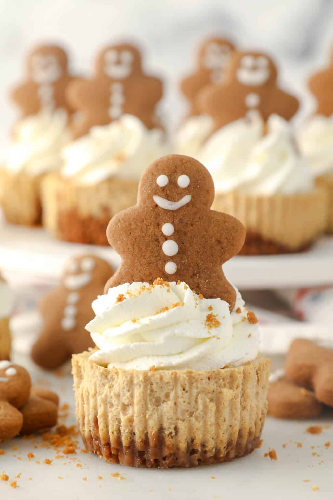

Mini Gingerbread Cheesecake

Description
'tis the season for gathering with friends and family! These wonderful Mini Gingerbread Cheesecakes is the perfect bite-sized treat to serve your guests this holiday season (every holiday season) while also leaving room cookies.
Ingredients
- 1 1/2 cups (186g) Biscoff cookie crumbs
- 3-4 tablespoons (43-56g) unsalted butter, melted
- 16 ounces (452g) full-fat cream cheese, at room temperature
- 1/2 cup (95g) light brown sugar
- 1/8 teaspoon ground cinnamon
- 1/8 teaspoon ground ginger
- Pinch of nutmeg
- 2 teaspoons (10ml) pure vanilla extract
- 1/2 cup (120g) sour cream, at room temperature
- 2 tablespoons (30ml) molasses
- 2 large eggs, at room temperature
For the Toppings (optional)
- 1 cup (236ml) heavy whipping cream
- 1/2 cup (65g) powdered sugar
Steps
- Preheat the oven to 350°F. Line a cupcake pan with baking liners
- Grind the Biscoff cookies into a fine crumb using a food processor or blender
- in a medium-sized bowl, combine the cookie crumbs with 3 tablespoons of the melted butter and stir until well
combined. If the mixture still seems dry, add an additional tablespoon
- Spoon 1 heaping tablespoon of the crust mixture into each cupcake liner and press into the pan with a spoon.
Set aside
- In a mixing bowl, beat the cream cheese, sugar, spices and vanilla extract until well combined and free of
any lumps, scraping down the bowl as needed.
- Next, beat in the sour cream and molasses until well combined. Then, add the eggs, beating until the mixture
is completely smooth
- Use a large cookie scoop (or 1/4 cup measuring cup) to spoon the batter into the prepared cupcake liners. A
heaping cookie scoop should fill the liners nearly full, leaving about 1/4-inch at the top.
- Bake at 350°F for 15-18 minutes. The centers of the cheesecake should be slightly jiggly. Remove from oven
and cool completely in the pan. Then, refrigerate for a minimum of 2 hours prior to serving.
- For the topping: Prepare the whipped cream. Place the mixing bowl and whisk attachment in
the freezer for 5 to 10 minutes to chill. Pour the heavy whipping cream into the chilled bowl and use an electric
mixer to beat the heavy cream on medium-high speed until soft peaks start to form. Slowly add the powdered sugar
and continue beating on high speed until stiff peaks form. Pipe or spoon onto chilled cheesecakes and top with a cookie
Notes
Biscoff cookies can be swapped for graham crackers or gingersnaps. 25-26 Biscoff cookies will give you 1 1/2 cups
of crumbs. Since the crumb and texture of cookies can vary, i've suggested 3-4 tablespoons of butter. If after
adding 3 tablespoons of butter your crust seems dry, add an additional tablespoon.
Back to recipes